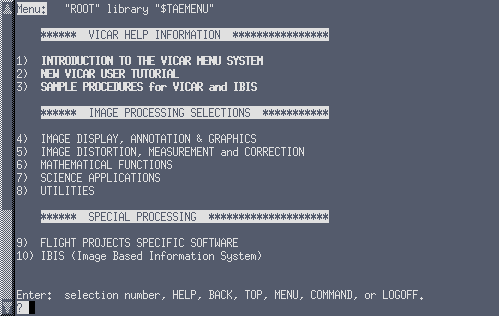

Contents
6.1 VICAR Help
6.1.1 HELP Command
6.2 VICAR TUTOR Mode
6.2.1 General TUTOR Information
6.2.2 TUTOR-SCREEN Mode
6.2.3 TUTOR-NOSCREEN Mode
6.3 VICAR MENU Mode
6.3.1 General Menu Information
6.3.2 The MENUTREE
6.3.3 Creating a Menu
6.4 Syntax Checking
6.5 Message Interpretation
6.5.1 General Message Information
6.5.2 HELP-MESSAGE
6.5.3 "?"
Within this section, a variety of user aids will be introduced. These tools will prove invaluable in all stages of the user's development. The aids being covered include Help, Tutor and Menu modes, syntax checking and message interpretation.
6.1 VICAR Help
The VICAR executive assists users of all experience levels. It is able
to give on-line information and instructions to a user when trouble is
encountered at any point in a session. The following types of "help"
are available:
jpl.vicar or sending them to
Shari.C.Mayer@jpl.nasa.gov via email.
6.1.1 Help Command
General help information on VICAR can be obtained by typing
help with no subcommand. General information is
available on most commands used in the Command mode.
Syntax: General Help information.
VICAR> help
Help on a specific topic can be obtained by using one of the following
HELP subcommands:
help-command (default for help) help-proc (default for help) help-parm help-global help-message (Section 6.5.2) help-hardcopy
help-command and help-proc are the defaults
for help. VICAR locates the command or proc by first
doing a search among an intrinsic command list and then, if not found,
performing a hierarchical library search.
The -command subcommand displays information on the
specified command. If a subcommand is specified, then the information
displayed will be for the subcommand only.
Syntax:
VICAR>help-command command=command[-subcommand]
Example: Display help on the command enable-script.
VICAR>help-command enable-script
The -proc subcommand displays information on the
specified proc or proc subcommand. Syntax:
VICAR>help-proc proc=proc[-subcommand]
Example: Display help on the proc label-list.
VICAR>help-proc label-list
The -parm subcommand is used to request detailed
information on a specified parameter of a proc or a proc
subcommand. Syntax:
VICAR>help-parm parm=parm proc=proc[-subcommand]
Example: Display help on the parameter nl of the
program gen.
VICAR>help-parm nl gen
The -global subcommand is used to request a detailed
description of the specified Global variable. Syntax:
VICAR>help-global variable=global_variable_name
Example: Display help on the global variable
$aplib
VICAR>help-global $aplib
The -hardcopy subcommand writes a disk file containing
information from both the help-proc and from Tutor. This
file can then be printed in order to obtain a hardcopy of the
information. If an output filename is not specified the file will be
named procname.mem and it will be located in the
user's current directory. Syntax:
VICAR>help-hardcopy proc=proc [output=filename]
Example: Create a file (difpic.mem) of help
information for the program difpic.
VICAR>help-hardcopy difpic
An alternate method to obtain a hardcopy of the help information is to
print the procname.pdf from the applications
library.
6.2 VICAR Tutor Mode
6.2.1 General Tutor Information
Within VICAR there is a mode called "Tutor" which does exactly what
its name implies. It tutors or assists the user in the use of procs
and the parameters associated with them. Tutor not only permits the
user to obtain more information concerning procs, but it actually
permits the user to select parameters and then execute the proc via
the run command.
Tutor mode can be accessed by any one of the following methods:
tutor proc_name in Command mode
esc esc at the proc prompt (Section
7.1.1.5) in an interactive proc and then typing tutor
TUTOR-SCREEN is a formatted terminal screen display (Section 6.2.2).
TUTOR-NOSCREEN is similar in style to the TAE Command mode but provides a different prompt, lists the parameters requested and allows a set of commands unique to a Tutor session (Section 6.2.3).
When tutoring is initiated, the mode entered by Tutor will be
determined by the Global variable $tutor. It can be
overridden by using one of the Tutor subcommands
(-screen, -noscreen).
Syntax:
VICAR>tutor[-subcmd] proc_name[-subcmd] [proc-parameters]
Example: Tutor the program label-list in SCREEN
mode.
VICAR>tutor-screen label-list
The proc-parameters field is optional and may contain a
list of parameters. Parameters supplied on the Tutor command line
become initial or default values in the Tutor session.
6.2.2 TUTOR-SCREEN Mode
TUTOR-SCREEN mode commands allow the user to:
EXPERT When a multi-valued parameter has more values
than will fit on one Tutor screen, only one full screen is shown.
Tutor maintains a "window" on the elements of the parameters. Unless
a particular element is referenced (e.g.,
parm(i)= ), the display window
includes the first element. This window may be moved by using the
intrinsic command show.
The "+" adjacent to the page number in the upper right corner of the Tutor display indicates that there are more pages available within the display. If the character in that position is a period, there are no more pages.
Descriptions of Tutor mode user commands and special Tutor line editor keys can be found in Appendices 10.8 and 10.9, respectively.
6.2.3 TUTOR-NOSCREEN Mode
The NOSCREEN mode of Tutor exists to support the following situations:
hardcopy terminals, unsupported terminals for which VICAR can only
operate in scrolling mode, low-speed terminals where the time for
screen update is prohibitive, or personal choice (some users prefer
the NOSCREEN Tutor mode).
NOSCREEN Tutor mode commands allow the user to:
page and
<cr>) are not available.
list command may be used to display parameter
names and current values. This command may be supplied with a list of
specific parameters to be displayed, or if no list is supplied, all
parameters for the proc will be displayed.
display command may be used to display parameter
names, values and a descriptive text for each parameter.
Example: TUTOR-NOSCREEN Session
VICAR>tutor-noscreen difpic
proc "difpic", library "$R2LIB"
Parameters requested: INP, OUT, SIZE, SL, SS, NL, NS...
VICAR-difpic>list
INP= (no value specified)
OUT= -- (null value)
SIZE=(1,1,0,0)
SL=1
SS=1
NL=0
NS=0
NB=0
FORMAT= -- (null value)
STAT="STAT"
MOD= -- (null value)
VICAR-difpic>inp=(a.bat,b.cat)
VICAR-difpic>out=d.dat
VICAR-difpic>size=(1,1,400,350)
VICAR-difpic>list size
SIZE=(1,1,400,350)
VICAR-difpic>run
Menu mode is the VICAR alternative to Command mode. In Menu mode, a user invokes applications by locating and selecting them through a series of menus. Each menu is a terminal display containing categories, each describing either a more detailed menu or a proc to be executed.
There are two methods to access the VICAR Menu mode. Depending on system configuration, the user may enter the Menu mode when invoking VICAR. In this instance, the user is given a "ROOT" menu and the Menu prompt ?. Alternatively, the user can manually enter the Menu mode.
Syntax:
VICAR>menu [name=menu_name]
Where: menu_name is the name of the desired
menu. If this is the first entry into Menu mode for the current session, the default menu is the ROOT directory defined by the host system. If it is not the first entrance, then the default will be the most recent menu the user accessed. The menu is located using the hierarchical library search unless the user explicitly specifies the library name of the menu.
Example: A typical menu screen.
VICAR>menu name=root
 The above figure is an example of the format of a menu terminal display. The categories are numbered entries arranged vertically on the screen. The prompt-line options are at the bottom of the screen arranged horizontally above the menu prompt.
At the menu prompt, ?, the user selects a category or
enters a Menu option. If the category selected is a menu, the new
menu is displayed. If the category selected is a proc, VICAR enters
Tutor mode in order to prompt the user for the proc's parameters.
After execution of the proc, the display of the last menu can be
obtained by pressing the <CR> key.
If a Menu option is selected, VICAR executes the command. Menu options are limited to those found in Appendix 10.7. These allow only basic management functions which include: accessing, moving back up the menu hierarchy, making a transition to Command mode, and exiting VICAR.
EXPERT A user may switch back and forth between Menu
mode and Command mode. When entering the Command mode from a menu
(using command), the current menu and the path to the
current menu are remembered. This context is automatically restored
when Menu mode is subsequently re-entered.
6.3.2 The MENUTREE
(At the current time the Menutree is only available on VMS systems.)
WIZARD The ability to move forward or backward
through the levels of a menu is essential to operating within VICAR.
Unfortunately the user also runs the risk of conceptually "losing
their place" in the system because of this flexibility. There is a
program, menutree, available within VICAR which permits
the user to generate a graphic representation of a selected menu
system.
Syntax:
VICAR>menutree [menu=menu_name] [output=output_option]
Where: menu specifies the starting menu name. If omitted,
the default value is the top of the current
menutree (see Global variable $menus).
output directs the listing of the menutree:
= file - create menutree.txt
= printer - send to line printer
= terminal - send to terminal (default)
Example: Menutree run on the menu presented in
Section 6.3.1.
VICAR>MENUTREE MENU=TAE$MENU:ROOT OUT=T
**************** VICAR HELP INFORMATION ****************
TAE$MENU:
ROOT-------|
|> TAE$MENU:INTRO.PDF
|> NUT
|- LEVEL3.
| MDF-------|
| |> TAE$MENU:SAMPLE1.PDF
| |> DCL @TAE$MENU:GEOREF.COM
| |> DCL @TAE$MENU:TIEPOINT.COM
| |> DCL @TAE$MENU:PROJECTION.COM
| |> DCL @TAE$MENU:VARIATE.COM
|
|
|- LEVEL4.
| MDF-------|
| |- ANNOT1.
| | MDF-------|
| | |- FONT
| | |- MASKV
| | |- STARLAB
| | |- TEXTAD
| |
| |
| |- DISPLAY1.
| | MDF-------|
| | |- BROWSE
| | |- DISPLAYS
| | |- DISPOUT
| | |- EDIMAGE
.
.
.
WIZARD If Menutree cannot be located in
TAE$UTIL, ask your system administrator for the proper
location.
6.3.3 Creating a Menu
WIZARD A menu corresponds to a Menu Definition File
(MDF), which is a text file created or changed by using the host
system's text editor. MDFs contain the title of the menu, text
describing each menu entry, name of the proc or menu files associated
with each entry and help information for the menu. Further
information on menu creation can be found in the TAE Command
Language Programmer's Manual.
6.4 Syntax Checking
A user has the ability, within VICAR, to check the syntax of a
procedure (Section 7.3) that has been
written. This is particularly useful for procedures that will be run
in the Batch mode. The syntax checker sets a switch which prevents
VICAR commands from executing. However, all normal processing up to
the actual procedure execution does take place, so any syntax or
parameter errors that are visible to VICAR will be detected and
reported to the user.
Once the syntax checker has been invoked, anything that is typed will be verified (e.g., VICAR commands or procs).
Syntax:
VICAR>syntax check
BEWARE The syntax checker only verifies the
wording to make sure all commands are valid VICAR commands. It does
not check logic errors, existence of referenced files or availability
of resources.
BEWARE All parameters required by a proc need to
be supplied in order to successfully run the checker. Syntax check
will fail when variables are assigned at time of execution (e.g., the
proc camparan).
The syntax checker will remain invoked until the user turns it off wth the following command.
Syntax:
VICAR>syntax nocheck
BEWARE The command let $switch=...
should not be used in SYNTAX mode, since the syntax check flag is in
$switch. By setting $switch to an absolute
value, it is possible to accidently turn off the syntax check mode. To
change other options within $switch, use the
flag-add or flag-del commands. Further
online Help information is available on flags or see Appendix 10.4. Syntax:
VICAR>help flag
Brief error messages are one-line comments preceded, in brackets, by a "message key".
Syntax:
[SYSTEM-KEY] Message
where: [SYSTEM-KEY] is the "message key"
SYSTEM indicates which system issued the message:
VIC2 - VICAR Run-time Library
TAE - the TAE supervisor
KEY is the specific identifier for the
message given
MESSAGE is the text containing a comment from
VICAR
Example: End of volume message.
[VIC2-ENDOFVOL] End of volume (double tape mark) reached
In many cases, the brief error message adequately informs the user of
the problem. However, in some cases the user might still be at loss as
to what VICAR is trying to explain. In that case, there are two
methods for obtaining further online assistance on the message
interpretation:
help-message
?
$TAEHELP/msg/taefac.msg on UNIX
machines or VICSYS:[VICAR121.TAE52_VAX-VMS.HELP.TM]
TAEFAC.MSG on VAXes.
help-message is used when the user wishes
VICAR to expand upon the received message. VICAR responds with an
explanation of the error message and a suggested course of action for
the user. Syntax:
VICAR>help-message key=message-key
Example: Get more help on the end of volume message.
VICAR>help-message key=vic2-endofvol
Explanation:
The end of volume mark (double tape mark or double end
of file) was hit when trying to open a file on an input
tape.
User action:
Scan tape to determine the actual number of files on it,
and make sure that the proc does not try to access a file
beyond that number.
?". "?" is special in that
no other parameters are allowed and it always causes VICAR to display
help information on the last message received. Syntax:
VICAR>?

If you wish to return to the Contents page, click here.